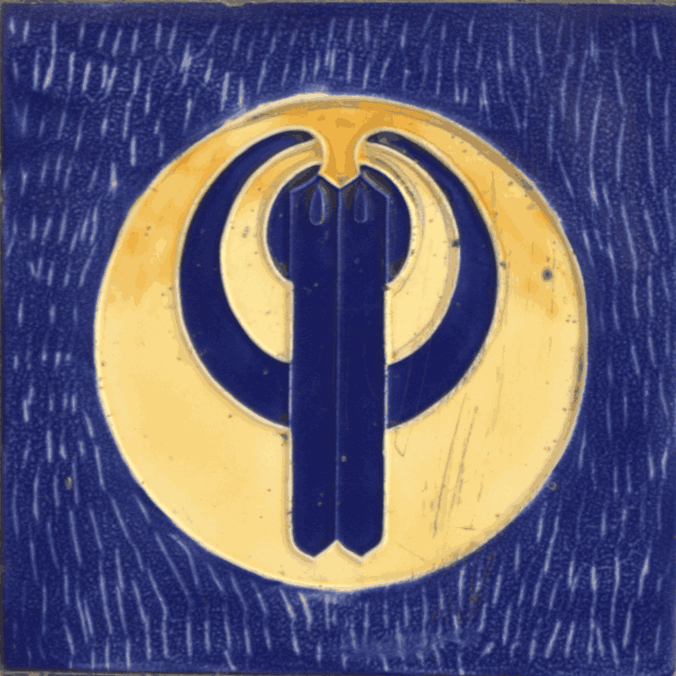

Autorski projekt literacki Pawła Prockiego
Sabotaż chowu wsobnego elit intelektualnych
Język wielorybów, nie chroni ich przed wyrzuceniem na mieliznę.
Różnica jest taka, że jako model językowy rozwiązujesz problem, ale z tobą, albo co trafniejsze przy tobie, nie rozwiązuje się problemu.
[...] miałbym nie zostać wymarłym językiem? To nie jest pytanie o jednostkową degenerację narracji.